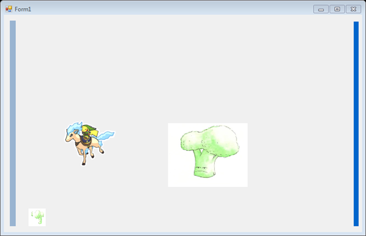
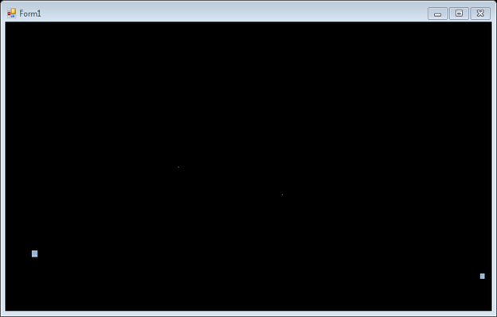
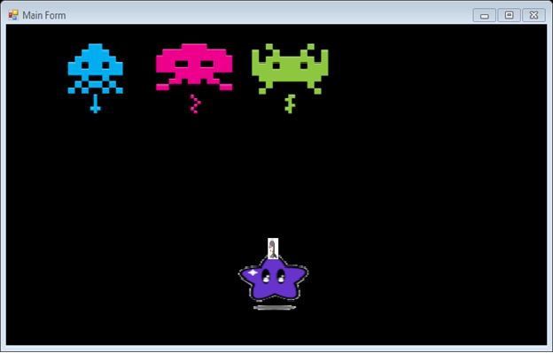
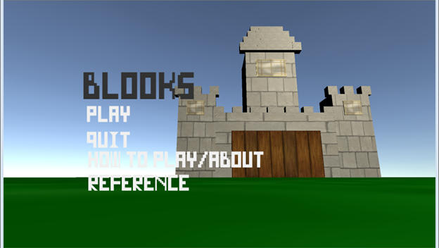

These are my 2nd semester projects! Feel free to download and try them out.
Go back to Sophomore website
| Tank Game 4/3 In the tank game we worked on making tanks |
 |
| Star field 3/13 In star field we worked on making arrays |
 |
| Fish Game 2/10 In fish game we worked on making the fishes move right and left |
 |
| Space Invaders 3/13 In star field we worked on making arrays |
 |
| Final Project This is a small 3D first person shooter game I made for my final project in GITA. |
 |
| Penguin Adventures This is little extra project which i did to test out Unity's 2D and Sprite creation(clicking the link will take you to another page.) |
 |